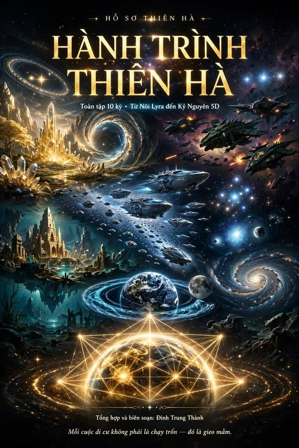
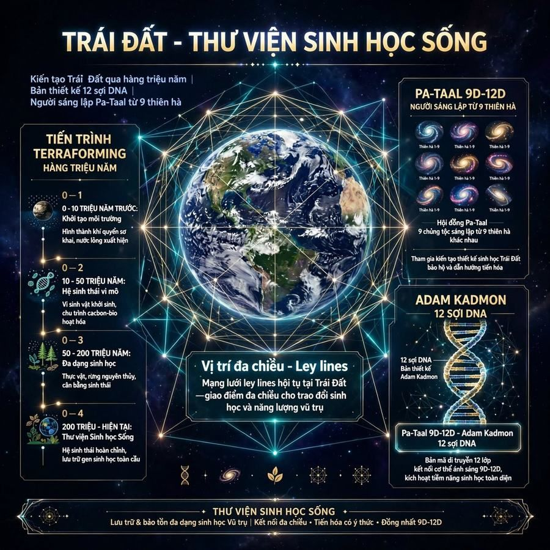
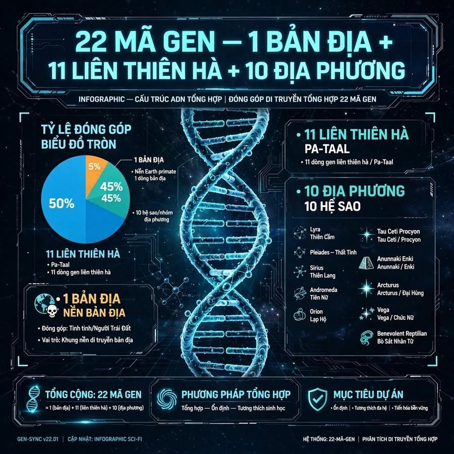
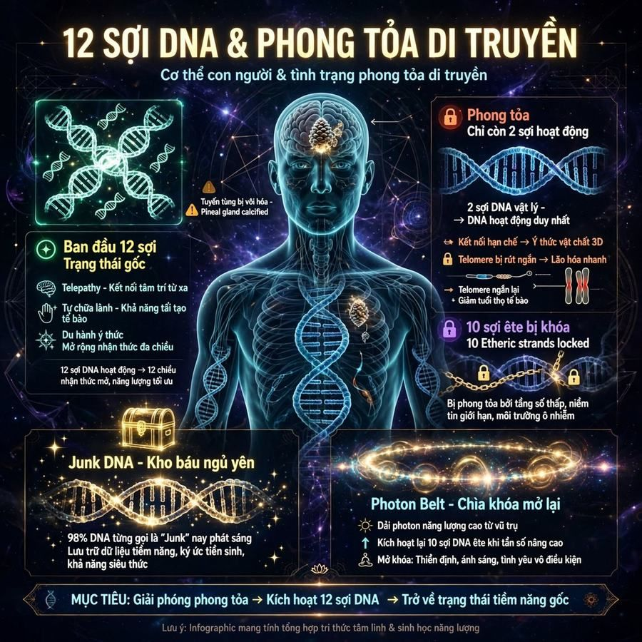

Trang chủ / Chuyên đề 2: Hành Trình Thiên Hà / Kỳ 14
Chuyên đề 2 · Kỳ 14 / 90
DỰ ÁN GIEO MẦM TRÁI ĐẤT & TUYỆT TÁC DI TRUYỀN 22 MÃ GEN

Bạn có bao giờ tự hỏi: Tại sao một hành tinh nhỏ bé nằm ở dải ngoại vi của Thiên hà như Trái Đất lại thu hút sự chú ý của hàng chục nền văn minh ngoài hành tinh? Tại sao vô số chủng tộc vũ trụ lại vượt qua hàng ngàn năm ánh sáng để đến đây, theo dõi, nghiên cứu và tìm cách tương tác với loài người?
Câu trả lời nằm ở một bí mật vĩ đại bị chôn giấu hàng triệu năm: Trái Đất không phải là một hành tinh phát triển ngẫu nhiên, và con người không phải là sản phẩm tiến hóa đơn lẻ từ linh trưởng. Chúng ta chính là trung tâm của dự án sinh học quy mô nhất lịch sử vũ trụ — Dự án Gieo mầm Vĩ đại (The Grand Earth Seeding Project) — và mang trong mình Tuyệt tác Di truyền 22 Mã Gen Vũ trụ!
✦ ✦ ✦1. BỐI CẢNH LỊCH SỬ VĨ ĐẠI: TRÁI ĐẤT — THƯ VIỆN SINH HỌC SỐNG CỦA VŨ TRỤ
Để hiểu được quy mô của Dự án Gieo mầm, chúng ta phải ngược dòng thời gian về hàng chục triệu năm trước. Sau những cuộc xung đột tàn khốc nổ ra từ nôi sinh học Lyra cho đến chòm sao Orion, dải Ngân Hà đứng trước nguy cơ bị xé rách bởi sự phân cực giữa các chủng tộc. Chiến tranh tàn phá dải tần số chung, gây mất cân bằng năng lượng nghiêm trọng.
Trước bối cảnh đó, các Hội đồng Siêu chiều và các Đấng Sáng Lập cổ xưa đã nhận ra rằng: Cách duy nhất để chữa lành sự phân cực và lập lại hòa bình bền vững cho vũ trụ không phải là tiếp tục chiến tranh, mà là tạo ra một điểm giao thoa di truyền.
Hệ Mặt Trời của chúng ta (trong ngôn ngữ thiên hà cổ được gọi là hệ sao Manah), và đặc biệt là hành tinh Trái Đất (Terra hay Gaia), đã được lựa chọn để trở thành tâm điểm của dự án này nhờ vào những điều kiện độc nhất vô nhị:
- Vị trí chiến lược đa chiều: Trái Đất nằm tại điểm giao nhau của các tuyến đường bố cục địa từ liên thiên hà (Ley lines) và các cổng xoáy không-thời gian xuyên chiều. Đây là nơi dải năng lượng từ nhiều thiên hà khác nhau có thể tự nhiên hội tụ và cộng hưởng.
- Tầm nhìn về Thư viện Sinh học Sống (The Living Library): Ý tưởng ban đầu của các Đấng Sáng Lập là biến Trái Đất thành một "Thư viện Sinh học Sống" khổng lồ. Nơi đây sẽ lưu trữ, bảo tồn và tổng hợp toàn bộ các mẫu gen di truyền, thực vật, động vật và năng lượng tâm thức ưu tú nhất từ hàng trăm thế giới khác nhau.
- Địa khai hóa quy mô hành tinh (Terraforming): Để chuẩn bị cho dự án, sinh quyển Trái Đất đã được điều chỉnh tỉ mỉ qua hàng triệu năm. Nguồn nước tinh thể giàu khoáng chất, bầu khí quyển cân bằng, dải từ trường bảo vệ và mạng lưới lưới năng lượng kim tự tháp tự nhiên đã được thiết lập. Trái Đất trở thành một "thiên đường sinh học" rực rỡ, sẵn sàng cho sự xuất hiện của tuyệt tác sinh học vĩ đại nhất.

2. DỰ ÁN PA-TAAL & NHÓM CHỦNG TỘC SÁNG LẬP CỔ ĐẠI (THE SEEDERS)
Đứng sau Dự án Gieo mầm Trái Đất là một tập thể các sinh mệnh cực kỳ tiến hóa được gọi là Pa-Taal (hay nhóm chủng tộc Seeders / Founders).
Nhóm Pa-Taal không thuộc về dải Ngân Hà địa phương của chúng ta. Họ đến từ Liên minh Liên Thiên hà (Intergalactic Confederation) — bao gồm các bậc thầy di truyền và sáng tạo từ 9 thiên hà lân cận (như Thiên hà Tiên Nữ - Andromeda, Thiên hà Tam Giác - Triangulum, Pegasus, Perseus, Fornax...).
- Tầm nhìn vượt không-thời gian: Nhóm Pa-Taal vận hành ở các dải mật độ tâm thức rất cao (từ dải 9D đến 12D). Họ nhìn thấy bức tranh toàn cảnh của vũ trụ và hiểu rằng: nếu kết hợp được di sản của các chủng tộc dạng người (Humanoid), chủng tộc bò sát (Reptilian), côn trùng (Insectoid), thủy sinh và thực vật vào chung một cơ thể sinh học, một sinh thể hoàn toàn mới sẽ ra đời — sinh thể mang khả năng thấu cảm và hàn gắn mọi phân cực!
- Mẫu hình Adam Kadmon: Nhóm Pa-Taal đã thiết kế nên khuôn mẫu di truyền nguyên thủy mang tên Adam Kadmon (Mẫu hình Con Người Vũ Trụ). Đây không phải là tên một cá nhân cụ thể, mà là tên gọi của bản thiết kế sinh học chuẩn mực: sở hữu 12 chuỗi DNA etheric, hệ thống luân xa đa chiều và tuyến tùng phát triển tối đa.

3. ĐẠI BẢN THIẾT KẾ: BÍ ẨN TUYỆT TÁC DI TRUYỀN 22 MÃ GEN
Khác với hầu hết các chủng tộc ngoài hành tinh vốn chỉ mang dòng gen thuần chủng của riêng hành tinh họ (ví dụ người Pleiades mang gen Pleiades, người Orion mang gen Orion), con người Trái Đất được tạo ra như một "Masterpiece" (Bộ sưu tập di truyền vĩ đại).
Trong kho gen tập thể của nhân loại Trái Đất chứa đựng sự đóng góp tinh túy của 22 nguồn mã gen vũ trụ:
A. Mẫu gen cơ sở bản địa (1 nguồn)
- Linh trưởng nguyên thủy Trái Đất: Được chọn lọc để làm "bộ khung thể chất" giúp cơ thể con người thích nghi hoàn hảo với trọng lực, bầu khí quyển, chu kỳ sinh học và từ trường của hành tinh Trái Đất.
B. Mẫu di truyền Liên Thiên hà (11 nguồn)
- Được đóng góp trực tiếp từ 11 chủng tộc thuộc nhóm Pa-Taal / Seeders đến từ các thiên hà bên ngoài. Các mẫu gen này mang lại cho con người khả năng kết nối tâm thức siêu chiều, lòng thấu cảm vô hạn, khả năng yêu thương thuần khiết và sợi dây liên kết trực tiếp với Ý Thức Nguồn Vũ Trụ.
C. Mẫu di truyền Thiên hà Địa phương (10 nguồn)
- Được đóng góp qua các đợt di cư, hỗ trợ và tương tác của các nền văn minh trong dải Ngân Hà (Nataru):
- Lyra (Ahel, Taal, Noor): Mang lại cấu trúc xương, màu da, tinh thần tự do và tính sáng tạo nghệ thuật.
- Pleiades (Errahel, Taygeta): Đóng góp tần số hòa hợp, tình yêu thiên nhiên và khả năng cảm thụ âm thanh/tần số.
- Sirius (Katayy & Sirius B): Đóng góp trí tuệ di truyền, công nghệ tâm linh, kết nối với nước và tri thức hình học thiêng liêng.
- Andromeda (Zenae): Đóng góp khả năng du hành ý thức, tư duy logic kết hợp trực giác cao cấp.
- Orion (Các dòng gen tự do): Đóng góp ý chí kiên cường, sức mạnh sinh tồn và sự bền bỉ.
- Tau Ceti & Procyon: Đóng góp khả năng thích ứng môi trường khắc nghiệt và kỹ năng sinh học.
- Anunnaki (Dòng gen Enki hòa bình): Đóng góp sự nâng cấp bộ não, khả năng phân tích và tinh chỉnh cấu trúc máu.
- Arcturus: Đóng góp tần số chữa lành, lòng từ bi và khả năng cảm nhận năng lượng tinh tế.
- Vega: Đóng góp sự điềm tĩnh và kết nối với tri thức cổ xưa.
- Chủng tộc Bò sát hòa bình (Reptilian Benevolent Factions): Đóng góp hệ thống bản năng sinh tồn, cấu trúc thần kinh phản xạ nhanh và sự dẻo dai của thể xác.
Chính nhờ sự tích hợp 22 nguồn gen này, con người Trái Đất mang trong mình "chìa khóa di truyền" của toàn vũ trụ. Đó là lý do trong các tài liệu thiên hà, dòng máu con người Trái Đất thường được trân trọng gọi là "Hoàng tộc Di truyền" (Genetic Royalty)!
✦ ✦ ✦
4. BÍ ẨN 12 SỢI DNA & NĂNG LỰC NGUYÊN THỦY CỦA CON NGƯỜI
Trong trạng thái ban đầu khi Dự án Gieo mầm được kích hoạt, thể chất của con người Trái Đất không bị giới hạn như hiện nay. Con người nguyên thủy sở hữu 12 sợi DNA (12-Strand DNA) hoạt động hoàn chỉnh:
- 2 sợi DNA vật lý (Physical Strands): Điều khiển các chức năng sinh học vật lý, sự phát triển của cơ thể, hệ miễn dịch và các giác quan thông thường.
- 10 sợi DNA etheric (Interdimensional Strands): Kết nối trực tiếp cơ thể vật lý với các dải tâm thức cao hơn (từ 4D đến 12D).
Với bộ gen 12 sợi hoạt động trọn vẹn, con người nguyên thủy sở hữu những năng lực tự nhiên rực rỡ mà ngày nay chúng ta gọi là "siêu năng lực":
- Thần giao cách cảm (Telepathy): Giao tiếp trực tiếp qua sóng tư tưởng, hình ảnh và cảm xúc mà không cần dùng ngôn từ nói.
- Tự chữa lành tuyệt đối: Cơ thể có khả năng tự điều chỉnh tần số tế bào, đảo ngược lão hóa và tự phục hồi mọi tổn thương thể xác nhờ nguồn năng lượng Etheric dồi dào.
- Du hành ý thức & Thao túng vật chất (Telekinesis/Teleportation): Phóng chiếu nhận thức đi xuyên các dải không-thời gian và di chuyển vật thể bằng ý định tập trung.
- Trí tuệ Tuyến Tùng & Máu gốc Đồng: Tuyến tùng và tuyến yên hoạt động 100%, hệ thống máu giàu vi chất đồng giúp cơ thể hấp thụ trực tiếp ánh sáng quang phổ vũ trụ, cho phép con người sống thọ hàng ngàn năm trong sự minh mẫn.
5. CUỘC "PHONG TỎA DI TRUYỀN" & NỖI SỢ CỦA PHE KIỂM SOÁT
Tuy nhiên, sự rực rỡ của Dự án Gieo mầm Trái Đất đã thu hút sự đố kỵ và sợ hãi từ các thế lực kiểm soát tiêu cực (bao gồm tàn dư Đế chế Bò sát Ciakahrr, Tập đoàn Nebu và phe Anunnaki cai trị độc đoán).
- Nỗi sợ của phe kiểm soát: Các thế lực tiêu cực nhận ra rằng: Nếu con người Trái Đất thức tỉnh trọn vẹn tiềm năng 12 sợi DNA, họ sẽ trở thành những sinh thể mạnh mẽ nhất thiên hà. Khi đó, không một công nghệ thao túng, ma trận sóng âm hay đế chế quân sự nào có thể thống trị hay nô dịch được con người nữa.
- Cuộc "phong tỏa di truyền" (Genetic Lockdown): Trong các cuộc xung đột cổ đại, phe kiểm soát đã tiến hành can thiệp kỹ thuật sinh học quy mô lớn. Họ ngắt kết nối 10 sợi DNA etheric, rút ngắn chiều dài Telomere của tế bào và chỉ để lại 2 sợi DNA vật lý hoạt động cơ bản.
- Hệ quả của sự phong tỏa:
- Khả năng thần giao cách cảm và du hành ý thức bị suy giảm nghiêm trọng.
- Tuổi thọ con người bị thu hẹp từ hàng ngàn năm xuống còn vài chục năm.
- Tuyến tùng bị vôi hóa, khiến con người rơi vào trạng thái "vô minh", dễ bị thao túng bởi nỗi sợ hãi, sự chia rẽ và các ma trận nhận thức giả lập.
- Khoa học bề nổi sau này đã gọi 10 sợi DNA bị ngắt kết nối là "DNA rác" (Junk DNA) — một cái tên ngụy trang để che giấu thực tế rằng đó chính là kho báu di truyền đang ngủ yên!
6. TIẾN TRÌNH THỨC TỈNH 5D & SỰ KÍCH HOẠT LẠI BỘ GEN 22 MÃ
Dù bị phong tỏa ở thể xác 3D, bản thiết kế 22 mã gen nguyên thủy chưa bao giờ bị phá hủy hoàn toàn. Chúng vẫn tồn tại dưới dạng ký ức tế bào (Cellular Memory) trong trường năng lượng xung quanh cơ thể con người.
Hiện nay, Trái Đất đang bước vào dải năng lượng tần số cao của vũ trụ (Tiến trình thăng lên 5D). Điều này đang kích hoạt một làn sóng thức tỉnh di truyền trên toàn hành tinh:
- Sóng quang phổ Photon (Photon Belt): Năng lượng tần số cao từ Trung tâm Thiên hà đang chiếu xạ xuống Trái Đất, đóng vai trò như một "mã bẻ khóa" sinh học, kích hoạt các chuỗi DNA đang ngủ yên phát sáng và tái kết nối.
- Cơ chế thu-phát sóng của DNA: DNA thực chất là một ăng-ten sinh học lượng tử. Nó phản ứng trực tiếp với tần số tình yêu vô điều kiện, sự thấu cảm, âm thanh tần số tự nhiên (như Solfeggio 528Hz) và sự tĩnh lặng trong thiền định. Khi bạn nâng cao tần số nhận thức của bản thân, các tế bào trong cơ thể sẽ tự động mở khóa các mã gen cổ xưa.
- Sứ mệnh của các Starseed & Activators: Hàng triệu linh hồn từ khắp các hệ sao đã đầu thai xuống Trái Đất vào thời điểm này. Họ mang theo mã kích hoạt sẵn có trong trường năng lượng. Khi một Starseed thức tỉnh, họ phát ra dải sóng cộng hưởng giúp đánh thức bộ gen cho những người xung quanh, tạo nên một phản ứng dây chuyền thức tỉnh quy mô toàn cầu!
LỜI KẾT: HÃY TRÂN TRỌNG BẢN THỂ VĨ ĐẠI BÊN TRONG BẠN
Khi bạn hiểu được lịch sử di truyền của chính mình, bạn sẽ nhận ra rằng: Bạn không bao giờ nhỏ bé hay yếu ớt. Dòng máu đang chảy trong cơ thể bạn là di sản của 22 nền văn minh rực rỡ nhất vũ trụ. Sự kiên cường, lòng từ bi và tiềm năng vô tận đã được mã hóa sẵn bên trong DNA của bạn.
Mọi thử thách, mọi nỗi sợ và ma trận kiểm soát chỉ là những bài kiểm tra tạm thời để giúp bạn nhận ra sức mạnh thực sự của bản thể Nguồn! ✦ ✦ ✦ ✦